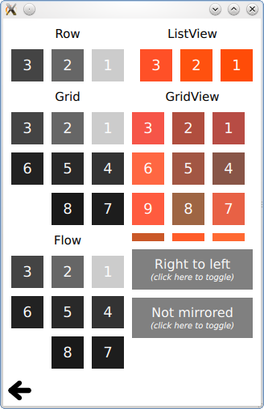

QtQuick Examples - Right to Left
This is a collection of QML Right to Left examples.

This is a collection of small QML examples relating to right to left(RTL) localization support.
Layout direction shows RTL layouting. Layout mirroring shows automatic mirroring of horizontal layouts in RTL locales. Text Alignment shows automatic mirroring of text alignment in RTL locales.
Files:
- righttoleft/righttoleft.qml
- righttoleft/layoutdirection/layoutdirection.qml
- righttoleft/layoutmirroring/layoutmirroring.qml
- righttoleft/textalignment/textalignment.qml
- righttoleft/main.cpp
- righttoleft/righttoleft.pro
- righttoleft/righttoleft.qmlproject
- righttoleft/righttoleft.qrc
- righttoleft/layoutdirection/layoutdirection.qmlproject
- righttoleft/layoutmirroring/layoutmirroring.qmlproject
- righttoleft/textalignment/textalignment.qmlproject